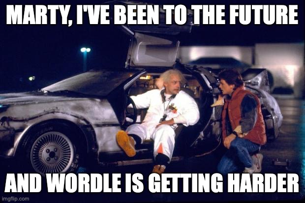
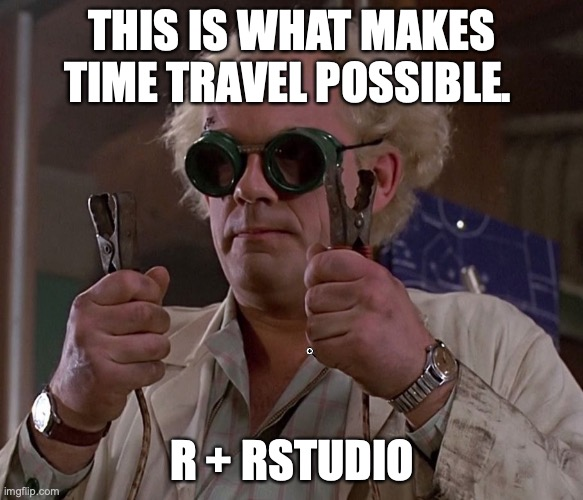
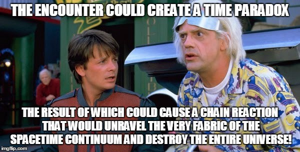

Wordle is getting (slightly) harder
Marty, I’ve been to the future and I have bad news. Wordle is getting harder. Not much, but harder.

With millions of people playing the game Wordle online and the recent takeover by the New York times, some speculation about whether the game is getting harder is unavoidable. Since Wordle chooses a different word every day, some players have started to complain recent target words are harder to be guessed:
It must be a coincidence, but the NY Times puzzles are hard and suddenly Wordle has questionable words
— anna spargo-ryan 🍉 (@annaspargoryan) February 12, 2022
Some claim that NYT might have changed something about the game. Even some newspapers have covered that worry.
But this is not true: nothing has changed in the game since the takeover, and the code and data used to get every day’s word has not changed. Moreover, it is statistically impossible to show that the game is getting more complicated since the NYT took over the game (only a couple of weeks).
Still, I’ve traveled to the future, and the answer is yes, Wordle is getting harder, but not because somebody has changed the game. It was bound to get harder in the future since its creation. Let me explain you how I investigate it using statistics and R.
Defining harder
As you know, Wordle chooses a target word every day. Although there are 12972 5-letter words in the Wordle dictionary, one of the key ingredients of the game is that the target word is not chosen randomly from that dictionary. The very creator of the game, Josh Wardle revealed that he narrowed down the list of Wordle words to about 2,500 which are most likely to be known by his partner (the first recipient of the game).
As I showed in a previous post, those words are more frequent in English than randomly chosen words from the dictionary. For example, the list of 2,500 contains words like grade, robot, pride, but not some unusual (possible) words like aahed or bemix.

Let’s see how frequent possible answers are. To do that we are going to use the fantastic wordle package created by Mikefc.
#remotes::install_github('coolbutuseless/wordle')
library(wordle)
library(tidyverse)
helper <- WordleHelper$new(nchar = 5)
dictionary <- helper$words
length(dictionary)## [1] 12972As we can see, there are 12972 5-letter words in the Wordle dictionary. Many places on the web have a list of past Wordle answers. You can download the list of past answers here, until yesterday’s:
past_answers <- read.csv("./data/past_answers.csv")
head(past_answers)## date word
## 1 2021-06-19 cigar
## 2 2021-06-20 rebut
## 3 2021-06-21 sissy
## 4 2021-06-22 humph
## 5 2021-06-23 awake
## 6 2021-06-24 blushTo define the game’s difficulty, we will use the same logic underneath Wardle’s choice of answers: their frequency in English. As in my previous post, we will use two corpora of commonly-used words in English to rank them according to the frequency. They are the corpus of commonly-used words from the Google Web Trillion Word Corpus and the BNC word frequency list. Let’s put them together:
helper = WordleHelper$new(nchar = 5)
freq = tibble(word = helper$words) %>%
left_join(read.csv("./data/unigram_freq.csv"),
by = "word") %>%
left_join(
read.csv("./data/bnc_freq.csv") %>%
group_by(word) %>%
summarise(count = sum(count)),
by = "word"
) %>%
mutate(
count.x = ifelse(is.na(count.x), 0, count.x),
count.y = ifelse(is.na(count.y), 0, count.y),
count = count.x/sum(count.x) + count.y/sum(count.y),
# need a nonzero count for all words,
# so just assume words that don't
# appear at all are half as frequent as the
# least frequent appearing word
count = ifelse(count==0,min(count[count != 0])/2,count),
# rough log of the count shifted above 0
# (we'll want this later)
log_count = log(count) - log(min(count)/2),
rank = rank(-count,ties.method = "random",)
) Here are the top most frequent 5-letter words (top ranked):
freq %>% arrange(rank) %>% head()## # A tibble: 6 × 6
## word count.x count.y count log_count rank
## <chr> <dbl> <dbl> <dbl> <dbl> <int>
## 1 which 810514085 3719 0.0554 13.9 1
## 2 there 701170205 3278 0.0486 13.8 2
## 3 their 782849411 2608 0.0423 13.6 3
## 4 about 1226734006 1971 0.0420 13.6 4
## 5 would 572644147 2551 0.0383 13.5 5
## 6 other 978481319 1421 0.0317 13.4 6and the bottom less frequent
freq %>% arrange(rank) %>% tail()## # A tibble: 6 × 6
## word count.x count.y count log_count rank
## <chr> <dbl> <dbl> <dbl> <dbl> <int>
## 1 flews 0 0 0.000000101 0.693 12967
## 2 trods 0 0 0.000000101 0.693 12968
## 3 fusks 0 0 0.000000101 0.693 12969
## 4 fugus 0 0 0.000000101 0.693 12970
## 5 staps 0 0 0.000000101 0.693 12971
## 6 jurel 0 0 0.000000101 0.693 12972The average rank of the answers in Wordle is much smaller than randomly chosen words in the dictionary, as expected:
freq %>%
mutate(`Wordle Answer`=ifelse(word %in% past_answers$word,T,F)) %>%
group_by(`Wordle Answer`) %>% summarize(mean_rank=mean(rank))## # A tibble: 2 × 2
## `Wordle Answer` mean_rank
## <lgl> <dbl>
## 1 FALSE 6571.
## 2 TRUE 1999.We can investigate if the rank has changed since Wordle started in Jun 2021:
require(ggrepel)## Loading required package: ggrepelmerge(past_answers,freq) %>%
ggplot(aes(x=as.Date(date),y=rank)) + geom_point() + geom_smooth() +
geom_text_repel(aes(label=ifelse(rank>6000 | rank < 100,word,""))) +
geom_vline(xintercept = as.Date("2022-02-01"),linetype=2) +
scale_y_log10() + labs(x="Date",title="Rank (higher is harder)",y="")+
scale_x_date(date_labels = "%b/%Y")## `geom_smooth()` using method = 'loess' and formula 'y ~ x' The vertical dashed line is when the NYT took over. We don’t see any statistically significant change (consider the error bars). If anything, we can see a little bit of change towards the end, but to more frequent words in English! So, if any, the game is getting simpler more recently. However, this small change is not statistically significant. A t-test between the average rank before and after the NYT takeover shows that (p-value = 0.27):
The vertical dashed line is when the NYT took over. We don’t see any statistically significant change (consider the error bars). If anything, we can see a little bit of change towards the end, but to more frequent words in English! So, if any, the game is getting simpler more recently. However, this small change is not statistically significant. A t-test between the average rank before and after the NYT takeover shows that (p-value = 0.27):
library(ggpubr)
merge(past_answers,freq) %>%
mutate(`NYT owned`=ifelse(date >= "2022-02-01",T,F)) %>%
ggboxplot(x="NYT owned",y="rank",
color="NYT owned",add="jitter",palette="jco") +
stat_compare_means(method="t.test") +
labs(y="Rank (larger is harder)",x="") Again, nothing has changed in the dynamic and code of the game, so what the players might be reporting is just a statistical fluke. Or a personal impression.
Again, nothing has changed in the dynamic and code of the game, so what the players might be reporting is just a statistical fluke. Or a personal impression.
Wordle 2027
If nothing changes, the only way the game could become harder is that answers are selected from less frequent words. Can we investigate it? Fortunately, I recently bought a DeLorean on eBay1, and I went back to the future to obtain the list of all Wordle answers until October 2027. Yes, I got the Almanac in 2027 with all the past answers to the game!
Let’s load them (out of respect to the game’s developer and the community of players, I won’t distribute them, so the code below only works on my computer. I only show the first ones in 2021):
all_answers <- read.csv("all_solutions.csv")
head(all_answers)## date word
## 1 2021-06-19 cigar
## 2 2021-06-20 rebut
## 3 2021-06-21 sissy
## 4 2021-06-22 humph
## 5 2021-06-23 awake
## 6 2021-06-24 blushand add the rank of the chosen word each day
all_answers <- merge(all_answers,freq)Let’s see the evolution of the rank (how hard is the game) of the answers in the future (I have added a small amount of noise so it cannot be reversed)
all_answers %>%
ggplot(aes(x=as.Date(date),
y=rank+600*rnorm(length(rank)))) +
geom_point() + geom_smooth() +
geom_vline(xintercept = as.Date("2022-02-01"),linetype=2)+
labs(x="Date",title="Rank (higher is harder)",y="")## `geom_smooth()` using method = 'gam' and formula 'y ~ s(x, bs = "cs")'
As we can see, the rank of the words is more or less homogeneous. Although we can see a slight upwards tendency in the rank. Let’s see how the average rank changes by month and year.
require(lubridate)
all_answers %>% group_by(month=month(date),year=year(date)) %>%
summarize(mean_rank=mean(rank)) %>%
mutate(date = lubridate::my(paste(month,year,sep="-"))) %>%
ggplot(aes(x=as.Date(date),y=mean_rank)) + geom_line() +
labs(x="Date",title="Average rank by month",y="") The tendency is clear: the rank of the words will increase in the future, and the game will become more challenging because less frequent words will be chosen in the future. Actually, the beginning of 2022 looks promising since the average rank of the words chosen will be the lowest in the time series. However, it will be slightly harder than before around summer 2022.
The tendency is clear: the rank of the words will increase in the future, and the game will become more challenging because less frequent words will be chosen in the future. Actually, the beginning of 2022 looks promising since the average rank of the words chosen will be the lowest in the time series. However, it will be slightly harder than before around summer 2022.
But why is it getting slightly harder? The reason is how Wardle chose the answers. When composing the list, maybe he decided first the most common words in English and later those less common words. This could explain the small change towards the end of the time series.
Finally, we can test the statistical significance between 2022 and 2027.
all_answers %>% filter(year(date) %in% c("2022","2027")) %>%
mutate(year=year(date)) %>%
ggboxplot(x="year",y="rank",
color="year",add="jitter",palette="jco") +
stat_compare_means(method="t.test") +
labs(y="Rank (larger is harder)",x="") The statistical difference is there (at 0.05 p-value). Statistically speaking, we can say that Wordle 2027 will be harder (on average) than 2022.
The statistical difference is there (at 0.05 p-value). Statistically speaking, we can say that Wordle 2027 will be harder (on average) than 2022.
Defining harder (again)
In the end, the real difficulty of the game can only be measured by how hard it is for the players to find the answer. Although we cannot get data about it, we can still simulate a simple strategy to win the game and see how well it will perform in the future. In a previous post I presented a possible strategy based on choosing words according to their rank and a smart choice of the first word with a 97% winning probability in the past.
To evaluate that strategy, I wrote a function in R named play_game that uses the package wordle to play against an answer given a first guess.
play_game <- function(word,first_guess,quiet=FALSE){
helper = WordleHelper$new(nchar = nchar(word)) #initialize the game
game = WordleGame$new(helper$words, target_word = word)
#make the first guess
if (!is.null(first_guess)) {
helper$update(first_guess,
game$try(first_guess, quiet = quiet))
}
#iterate until solved
while (!game$is_solved()) {
guess = score_words(helper$words)$word[[1]] #choose next guess
helper$update(guess, game$try(guess,quiet=quiet))
}
game$attempts
}The strategy is encoded into the score_words function, which chooses always the most frequent word out of the compatible words in each round:
score_words <- function(words){
ff <- freq %>% filter(word %in% words)
ff %>% arrange(rank)
}For example, this is how it plays against the word for Jan 10 using orate as first guess:
answer <- play_game(word="query",first_guess="orate",quiet=T)
answer## [1] "orate" "under" "query"This time it solved it in 3 tries.
Fast forward, let’s get the number of tries it will take to solve every game until 2027 using orate as first guess:
try_orate <-
map_dfr(all_answers$word,
\(w) {
n <- length(play_game(w,"orate",quiet=T))
data.frame(word=w,ntries=n)
}
) %>%
merge(all_answers)And once again, let’s see the average number of attempts by month and year:
try_orate %>% group_by(month=month(date),year=year(date)) %>%
summarize(mean_tries=mean(ntries)) %>%
mutate(date = lubridate::my(paste(month,year,sep="-"))) %>%
ggplot(aes(x=as.Date(date),y=mean_tries)) + geom_line() +
labs(x="Date",title="Average number of tries by month",y="")## `summarise()` has grouped output by 'month'. You can override using the
## `.groups` argument. Again we can see that the strategy will perform worse in later years. Finally, this is the probability to win (less of equal to 6 tries)
Again we can see that the strategy will perform worse in later years. Finally, this is the probability to win (less of equal to 6 tries)
try_orate %>% group_by(month=month(date),year=year(date)) %>%
summarize(prob_win=100*mean(ntries < 7)) %>%
mutate(date = lubridate::my(paste(month,year,sep="-"))) %>%
ggplot(aes(x=as.Date(date),y=prob_win)) + geom_line() +
labs(x="Date",title="Probability of winning (%)",y="")## `summarise()` has grouped output by 'month'. You can override using the
## `.groups` argument. At the end of 2027, the probability of wining even goes below 85%.
At the end of 2027, the probability of wining even goes below 85%.
Conclusion
So, yes, Wordle is getting slightly more challenging. But it has nothing to do with the recent New York Times takeover. If the game does not change in the future, we can expect the answers to be less frequent words in English (especially in 2027). Not too much, though, so it will still be playable and enjoyed by the community.
We still have time to practice those less common words. And most likely, the game will change before that. Perhaps since we now know the future, it will never become possible.

The actual list of possible answers up to October 2027 is hard encoded in the Javascript of the game. Out of respect to the game’s developer and the community of players I don’t recommend or encourage anybody to hack the code to do it and will not show or distribute them. The results displayed on this page are just for the statistical analysis of the game’s evolution. Please, don’t cheat, enjoy the game as it was intended.↩︎